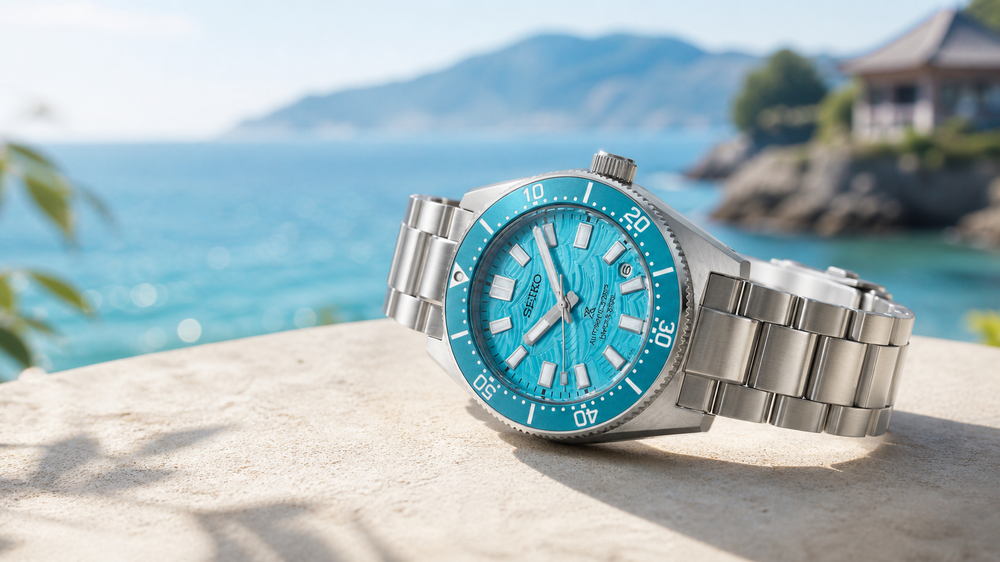
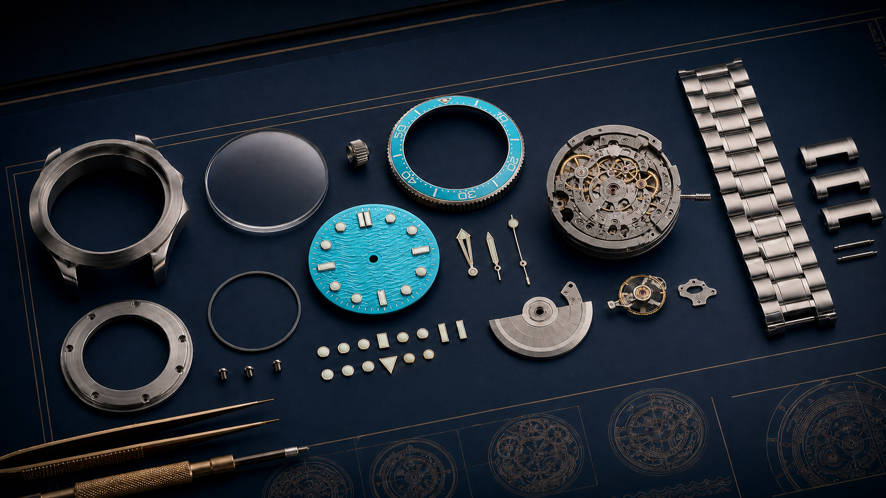

世界のファンが選んだ青。セイコー プロスペックス HBC011J、10月9日発売へ
こんにちは、ろぶーです。
時計の青文字盤はたくさんあります。でも今回の青は、メーカーの会議室だけで決まった色ではありません。世界のファンが、四つの海景色から選んだ「Daytime Blue」。明るい海の色を腕元へ落とし込んだ限定ダイバーズです。
セイコーは2026年8月26日、プロスペックスの限定モデル「HBC011J」を発表しました。発売予定日は10月9日、希望小売価格は税込199,100円。世界限定4,500本で、そのうち国内は2,000本です。
まだ実機を手に取ったレビューではありません。セイコー公式の発表と製品ページをもとに、見た目の魅力だけでなく、40ミリのケース、72時間の駆動、防水性能、購入前に確認したい点まで丁寧に見ていきます。
ファン投票で選ばれた「Daytime Blue」
このモデルの出発点は、1965年に誕生した国産初のダイバーズウオッチを受け継ぐ「1965 Heritage」シリーズです。セイコーは四つの海景色をテーマにしたデザイン候補を用意し、世界のファン投票を実施。その結果、昼の海を思わせる鮮やかな青が選ばれました。
公式写真を見ると、文字盤は一色に塗った平らな青ではなく、光の当たり方で濃淡が動いて見える仕上がりです。ベゼルも青で揃えながら、ステンレススチールの外装が輪郭を引き締めています。
限定モデルというと装飾を足したくなりますが、HBC011Jは基本の形を崩さず、色と背景の物語で特別感を出しているように見えます。普段使いできる落ち着きと、海の道具らしい明快さ。その間を狙った一本だと思います。
40ミリという、使いやすそうな大きさ
ケース径は40.0ミリ、厚さは13.0ミリ、縦は46.4ミリ。重量は174グラムです。ダイバーズらしい存在感はありますが、極端に大きな数字ではありません。
外装はステンレススチールで、表面にはセイコー独自の硬質コーティング「ダイヤシールド」が施されています。風防はカーブサファイアガラス、内面無反射コーティング付き。海辺だけでなく、街で日差しを受けたときの見やすさにも関係する仕様です。
写真だけでは装着感、文字盤の本当の色、ブレスレットの重さのバランスまでは判断できません。購入前には、できれば店頭で腕に載せ、袖口への収まりとバックルの扱いやすさを確認したいところです。

300m防水と約72時間の実用性
搭載するムーブメントは自動巻の6R55で、手巻機能と秒針停止機能を備えます。最大巻上時の持続時間は約72時間。金曜の夜に外しても、条件が良ければ月曜まで動き続ける長さです。
公称精度は日差+25秒〜-15秒。これは使用環境や姿勢によって変化する機械式時計の目安で、クオーツの精度とは考え方が違います。
防水性能は300m空気潜水用防水。逆回転防止ベゼル、ねじロック式りゅうず、ルミブライトも備えています。裏ぶたには「LIMITED EDITION」とシリアルナンバーが入るとされています。ただし、限定番号を指定して購入できるとは限りません。
価格と販売条件を整理
| 項目 | 公式情報 |
|---|---|
| 型番 | HBC011J |
| 発売予定日 | 2026年10月9日 |
| 希望小売価格 | 199,100円（税込） |
| 限定数 | 世界4,500本（国内2,000本） |
| 販売 | セイコーグローバルブランドコアショップ専用モデル |
| ケース | ステンレススチール（ダイヤシールド） |
| サイズ | 40.0 × 46.4 × 13.0mm |
| ムーブメント | 6R55、自動巻（手巻つき） |
| 駆動期間 | 最大巻上時約72時間 |
| 防水 | 300m空気潜水用防水 |
オープン価格ではなく、公式の希望小売価格が示されている点は分かりやすいです。一方、在庫、予約方法、実際の販売価格は店舗ごとに確認が必要です。限定数だけを見て焦らず、正規販売店で保証やアフターサービスも含めて確認したいですね。
Robu's Selectionとして選んだ理由
僕が気になったのは、限定本数よりも「選ばれ方」です。メーカーが一方的に用意した記念色ではなく、世界のファンが海の表情を選び、それが実際の製品になった。腕時計を買う人が、完成後の購入者だけではなく、企画の物語にも少し参加しているように感じます。
40ミリの扱いやすそうなサイズ、72時間のパワーリザーブ、300m防水。数字だけを見ても、飾って終わる限定品ではなく、普段から使うための土台があります。そのうえで昼の海の青が乗っているから、スーツにも休日の服にも、少しだけ気分を変える一本になりそうです。
もちろん、生成画像は実物を再現した製品写真ではありません。文字盤の色や質感、ケースの磨き分けは、必ずセイコー公式写真と実機で確かめてください。正式な発売と店頭展示を待ちながら、青の見え方を自分の目で確認したい。そんな楽しみを残してくれる時計として、今回のRobu's Selectionに選びました。
※2026年9月1日時点。仕様、発売日、販売方法は変更される場合があります。最新情報はセイコー公式および正規販売店で確認してください。掲載画像は実在するHBC011Jの写真ではなく、青い海と時計づくりの要素を説明するために編集部が生成したコンセプトイメージです。